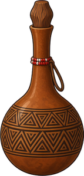

Pijltjes rennen, pijl omhoog springen, Shift sprinten, E speer, spatie stoten, spatie vasthouden werpen, langer vasthouden in een boog, pijl omlaag bukken, Q drinken, R opnieuw
100100
Levels
Test levels
Losse proefstukken
Episode Dark Africa
De nacht over de savanne
Episode Winter World
De witte berg
Episode Renew
Het land herboren
Voor Rosa
Leren spelen
Bouwenkies links wat je plaatst, klik op iets = weg, pijltjes = opschuiven. Stippellijn = waar de slang wakker wordt. Grootte bepaalt bij een doornbos het aantal klompen.
1,1
leeg
Sandboxzet neer wat je wilt testen, vlakke grond, geen automatische slangen
alsof ze je kwijt zijn: omdraaien en heen en weer, tot je hem weer uitzet
100%

0
Level gehaald!
Pauze
100%
100%
25
Tempo vertraagt het hele spel, looptempo alleen Amir.
Je sprong houdt altijd dezelfde afstand, dus je blijft elk ravijn halen.
Formaat verandert alleen hoe groot alles getekend wordt.
Je bent doodDruk op R om opnieuw te beginnen
Opdracht
📱
Draai je telefoonAmir speelt liggend, met het scherm in de breedte.
Pijltjes om te rennen, pijl omhoog om te springen, Shift sprint, E speer, spatie stoot, spatie vasthouden werpt, langer vasthouden in een boog, Q drinken, R opnieuw